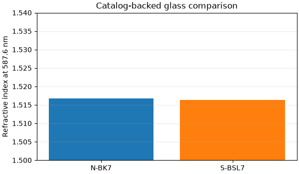

Note
Go to the end to download the full example code
Search materials and inspect provenance#
Find locally available BK7 datasets, inspect their canonical identities, and compare representative glass pages at a standard wavelength.
import matplotlib.pyplot as plt
from TypedUnit import ureg
from PyOptik import MaterialCatalog
catalog = MaterialCatalog.from_snapshot()
matches = catalog.search("BK7", shelf="specs", available=True)
print(f"Found {len(matches)} cached BK7 pages")
for page in matches[:5]:
print(page.id.key, "—", page.description)
Found 10 cached BK7 pages
specs/Cargille/BK7_matching_liquid — BK7 matching liquid
specs/HIKARI-optical/E-BK7 — E-BK7
specs/HIKARI-optical/J-BK7 — J-BK7
specs/HIKARI-optical/J-BK7A — J-BK7A
specs/SCHOTT-optical/BK7G18 — BK7G18
Canonical IDs make source selection explicit and reproducible.
identifiers = [
"specs/SCHOTT-optical/N-BK7",
"specs/OHARA-optical/S-BSL7",
]
wavelength = 587.6 * ureg.nanometer
labels, indices = [], []
for identifier in identifiers:
page = catalog.get(identifier)
material = page.load()
labels.append(page.id.page)
indices.append(float(material.n(wavelength, out_of_range="raise")))
print(material.provenance)
{'name': 'N-BK7', 'file_path': '/home/runner/.local/share/PyOptik/rii/specs/schott/optical/N-BK7.yml', 'reference': '<a href="https://refractiveindex.info/download/data/2017/schott_2017-01-20b.agf">SCHOTT Zemax catalog 2017-01-20b</a>\n(obtained from <a href="https://www.schott.com/en-us/products/optical-glass-p1000267/downloads/">http://www.schott.com</a>)<br>\nSee also <a href="https://refractiveindex.info/download/data/2017/schott_2017-01-20.pdf">SCHOTT glass data sheets</a>\n', 'conditions': {'temperature': 293}, 'comments': 'step 0.5 available\n', 'wavelength_range': <Quantity([0.3 2.5], 'micrometer')>, 'catalog_id': 'specs/SCHOTT-optical/N-BK7', 'source_url': 'https://refractiveindex.info/database/data/specs/schott/optical/N-BK7.yml'}
{'name': 'S-BSL7', 'file_path': '/home/runner/.local/share/PyOptik/rii/specs/ohara/optical/S-BSL7.yml', 'reference': '<a href="https://refractiveindex.info/download/data/2017/ohara_2017-11-30.agf">OHARA Zemax catalog 2017-11-30</a> (obtained from <a href="http://www.ohara-inc.co.jp/en/product/optical/list/">http://www.ohara-inc.co.jp</a>)<br>See also <a href="https://refractiveindex.info/download/data/2017/ohara_2017-11-30.pdf">OHARA glass data sheets</a>\n', 'conditions': {'temperature': 298}, 'comments': 'Recommended \n', 'wavelength_range': <Quantity([0.29 2.4 ], 'micrometer')>, 'catalog_id': 'specs/OHARA-optical/S-BSL7', 'source_url': 'https://refractiveindex.info/database/data/specs/ohara/optical/S-BSL7.yml'}
figure, axis = plt.subplots(figsize=(6, 3.5), layout="constrained")
axis.bar(labels, indices, color=["tab:blue", "tab:orange"])
axis.set(
ylabel="Refractive index at 587.6 nm",
title="Catalog-backed glass comparison",
ylim=(1.50, 1.54),
)
axis.grid(axis="y", alpha=0.25)
plt.show()

Total running time of the script: (0 minutes 0.828 seconds)